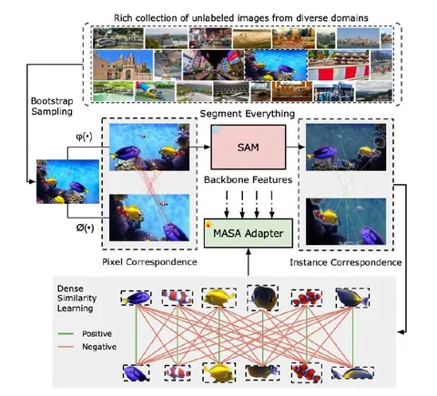

Сегодня разберём статью об элегантном симбиозе foundation-моделей и multi‑object tracking.
Главная проблема трекинга заключается в том, что размечать данные для обучения дорого. Авторы предлагают решение — полностью self‑supervised-подход, который учится ассоциировать объекты, используя только статичные неразмеченные изображения и foundation-модели. Например, SAM или Grounding DINO.
Как это работает: сначала SAM или другая foundation-модель генерирует маски всех возможных объектов для одного изображения. Может получиться до 256 proposal’ов на кадр — это даёт богатую коллекцию negative-примеров для обучения.
Из одной картинки получается две новых после применения аугментаций: рандомные аффинные преобразования, MixUp, или Large‑Scale Jittering, которые имитируют последовательные кадры видео. Поскольку известно, как двигались пиксели, после наложения масок SAM автоматически получается instance‑level correspondence. Это значит, что один и тот же объект в двух «кадрах» становится positive-примером, а соседние объекты — negative.
Далее через dynamic feature fusion для каждого proposal’а вычисляется appearance‑эмбеддинг. Обучение идёт по двум лоссам:
В результате MASA получает компактный дискриминативный вектор для каждого найденного объекта.
В инференсе трекинг сводится к поиску ближайшего эмбеддинга среди детекций на текущем кадре — просто, быстро и без дообучения.
На бенчмарке TAO TETA метод превосходит TETer, обученный с учителем (+2% AssocA). А на BDD100K MOTS достигает IDF1 49,7%, обходя UNINEXT с доменной разметкой.
Кроме того, MASA ускоряет инференс SAM в 10 раз за счёт предсказания спарсенных боксов вместо равномерной сетки точек.
Отдельно радует объёмный качественный ablation study: авторы честно показывают,
как влияют на результат выбор аугментаций, число пропозалов, тип бэкбона и другие параметры.
Разбор подготовила
404 driver not found
